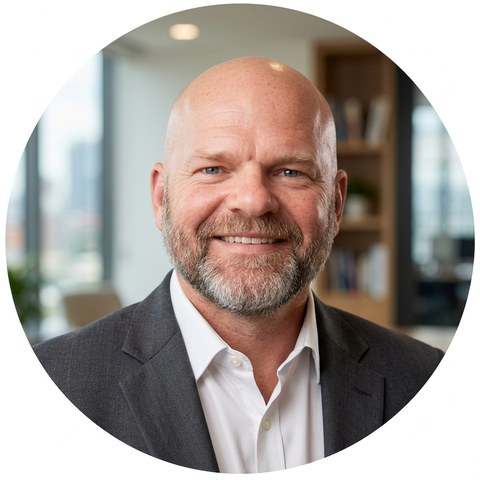

Richard Graham
Executive Operations Partner · Boston
The people I work best with are the second kind. They're building something. They're moving fast. They don't have time to manage the operation around themselves.
I've been asked to do this repeatedly: help a Senior Director launch a Merck research facility, support a division president through Sanofi's acquisition of Genzyme, help establish a newly elected US Senator's office, and today, partner with a private development principal running multimillion-dollar projects.
I create the operational structure that lets leaders stay focused on leading. I keep priorities organized, work moving, documentation accurate, relationships strong, and decisions ready.
Different industries. Same role.
Selected experience
Executive and operations partner to a private development principal. Portfolio spans multimillion-dollar residential development, property operations, and financial administration. Manage calendar, communications, contracts, and QuickBooks records; conduct due diligence across deeds, chains of title, and covenants; support acquisition strategy and closing decisions.
Senior Administrative Assistant supporting the President of Molecular Oncology / Multiple Sclerosis and the Vice President of Business Development during the Sanofi acquisition. Prepared executive reports, supported budgets and vendor evaluation, and coordinated clinical-affiliation outreach with Harvard, UMass, and Boston College.
Executive Assistant to the Senior Director of Molecular Oncology during the launch of a new research facility and laboratory. Managed complex calendars, multi-leg international travel, site budgets, and procurement. Coordinated scientists, facilities, IT, AV, security, vendors, and visitors while the team stood up operations.
Director of Corporate Sponsorship for Columbia's 250th anniversary. Established the corporate development program from scratch, built a pipeline of more than 100 corporate prospects, and managed relationships through university events, symposia, and performances.
Director of Public Affairs and Communications for a newly elected senator. Directed media relations, maintained community and government relationships, conducted confidential issue research, and helped establish the office's public-facing operations.
Five roles of increasing responsibility across Hillary Clinton's 2000 Senate campaign, the transition into the new Senate office, and HillPAC. As Deputy Finance Director, managed a portfolio of more than 1,000 donor prospects. In the newly established Senate office, worked with the Sergeant at Arms on IT systems, constituent databases, and official Senate mailings, helping build operational infrastructure at launch.
Research and academic background
Before the operations work, I trained as a scientist. That background is where the habits come from: define the question, gather what is observable, resist the conclusion you were hoping for. It is also why complex technical environments have never intimidated me.
Publications and conference presentations
Graham, R.D., Menge, J.A., Terry, L.M., & Hall, W.G. (1998). The effects of isolated maternal cues on ultrasonic vocalizations in neonatal rats [Abstract]. Developmental Psychobiology, 32(2). Presented at the Annual Meeting of the International Society for Developmental Psychobiology, New Orleans.
Graham, R.D., Blandino, P., Johanson, I.B., & Terry, L.M. (1997). Repeated maternal deprivation: effects of concurrent odor exposure [Abstract]. Developmental Psychobiology, 30(3). Presented at the Annual Meeting of the International Society for Developmental Psychobiology, Washington, D.C.
Graham, R.D., Johanson, I.B., & Terry, L.M. (1996). Effects of cocaine on memory for odor-milk pairings in young rats [Abstract]. Developmental Psychobiology, 29(3). Presented at the Annual Meeting of the International Society for Developmental Psychobiology, San Diego.
Graham, R.D., Terry, L.M., & Johanson, I.B. (1996). The Developmental Psychobiology Laboratory Manual. Florida Atlantic University.
Research
Laboratory work at the New York State Psychiatric Institute and Columbia University College of Physicians and Surgeons, examining neural and behavioral control of ultrasonic vocalizations and serotonin receptor knockout models. Trained in surgical procedure, behavioral testing, microscopy, histology, and statistical analysis.
Projects included Maternal-Infant Interactions in 5-HT1A and 5-HT1B Knockout Mice with Dr. Daniela Brunner; Respiratory Distress in 5-HT1A Knockout Mice with Drs. Myron Hofer, Harry Shair, and Rene Hen; Rat Pup Respiratory Behavior Correlated with Ultrasonic Production with Drs. Hofer, Michael Myers, and Susan Brunelli; and Implicit Memory Research with Dr. Martin Chodorow at Hunter College. Field studies in Animal Behavior at the American Museum of Natural History Southwestern Research Station in Portal, AZ.
Teaching
Teaching Assistant, Experimental Psychology, Department of Psychology, Hunter College.
Teaching Assistant, Psychopharmacology, Department of Psychology, Florida Atlantic University.
Selected honors
Science Fellowship, CUNY Graduate Center. CUNY Tuition Scholarship. Outstanding Research in Psychobiology Award, Florida Atlantic University. Ellisa Pollock Memorial Scholarship for Academic Excellence. Charter member, Parliament of Owls Student Leader Honor Society.
Where the pattern started
Elected Senate President of the Florida Atlantic University Broward Student Government, overseeing an annual budget of approximately $5 million. Treasurer of the Psychology Association. Registration Coordinator for the International Society for Developmental Psychobiology annual meeting.
Beyond the work
In the late nineties I was running graduate research at a Columbia lab, working a Senate campaign, teaching experimental psychology, and playing in a softball league in New York. Someone called me a Renaissance man. I took it to mean I could hold several complicated things at once, which turned out to be the whole job description.
Since then: a background role in an episode of Burn Notice. Field research on ants, spadefoot toads, and lizards in the Chiricahua Mountains with the American Museum of Natural History. Voter outreach and field operations on a string of campaigns from Florida to Colorado. Enough campaign finance work to know what a fundraising deadline feels like at midnight.
I'm currently looking for Executive Operations and senior executive support roles in Boston and Cambridge.